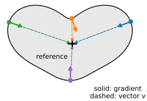
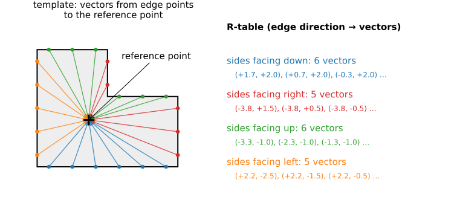
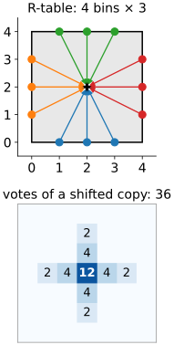
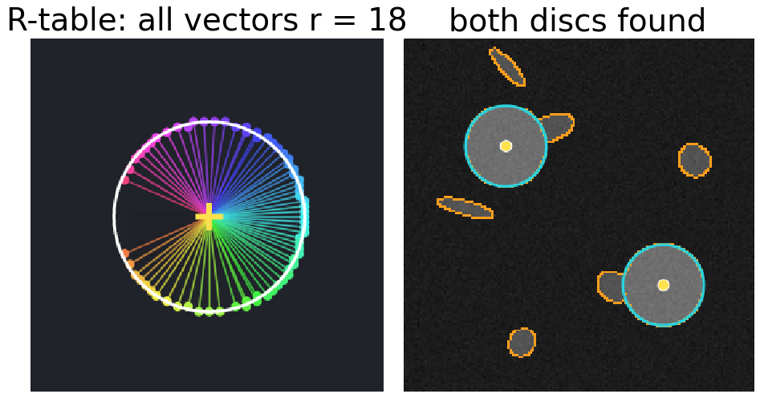
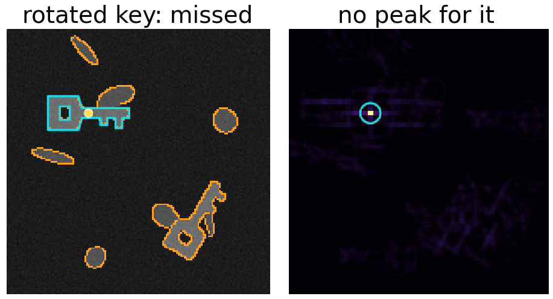
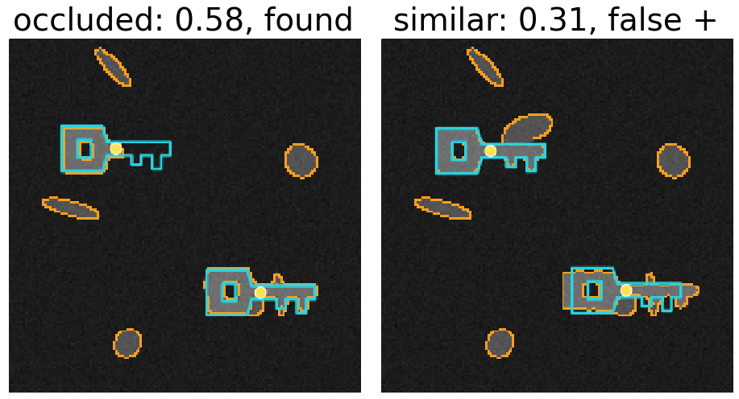

Lines and circles have formulas. A key, a leaf, a letter, a cell of a particular shape do not. The generalised Hough transform (Ballard, 1981) stores the shape as a table instead, and keeps the voting.
The R-table: for each edge direction, the vectors from the edge to a reference point.
Voting with the table: every edge point votes for where the reference point would be.
The circle with gradient voting is a generalised Hough transform.
Rotation and scale as extra dimensions, and what they cost.
Occlusion, clutter, and how this compares with other ways to find a shape.
Slides titled The math give the formulas and proofs; the ideas are complete without them.
Gradient voting for circles worked because an edge point knew where the centre was: at distance r along its gradient.
For any fixed shape the same holds, just without a formula:
Choose a reference point inside the shape (any point; the centroid is a natural choice).
From an edge point of the shape, the reference point is at some vector\mathbf v: a direction and a distance.
Which vector depends on where on the boundary the point is. The only local clue we have is the edge direction.
So: remember, for each edge direction, which vectors lead to the reference point.

The R-table

Built once from a template image: for every edge point, store the vector to the reference point under its gradient direction (in bins, e.g. 36 bins of 10°). A direction can hold several vectors: all sides facing the same way share one entry.
Voting with the R-table
In a new image, for every edge point \mathbf p with gradient direction \theta:
Look up the bin of \theta in the R-table.
For every vector \mathbf v in it, add one vote at \mathbf p + \mathbf v.
Where the shape is present, the votes of all its edge points land on the same reference point: a peak. Each vote that belongs to a “wrong” vector of the same direction lands elsewhere and spreads out.
Small example: a 4 × 4 square, reference at its centre, 4 direction bins. Each side has 3 edge points, so each bin holds 3 vectors. A translated copy: each of its 12 edge points casts 3 votes (36 in total); the centre gets 12, no other position more than 4.

Try it: the R-table and its votes
The circle is a special case
Take a disc of radius r as the template, with its centre as the reference point. Every edge direction occurs exactly once on the boundary, and the vector from that point to the centre has length r and points along the gradient.
The R-table holds one vector per direction: length r, along the gradient.
Voting with it is exactly gradient voting for circles with a known radius and known polarity.
The general method contains the special case. In the demo (“circle template”), the table has 136 entries spread over 36 bins (2 to 5 per bin, from the digital edge), all of length 18.

Demo still: "circle template".
Rotation and scale
A rotated copy of the shape has rotated gradient directions and rotated vectors: the unrotated table looks up the wrong bins and votes in the wrong places. It is missed.
Search over rotations \phi and scales s: for each (\phi, s), rotate and scale the table (shift the direction index by \phi, rotate and scale every vector), vote into its own accumulator slice.
The accumulator becomes 4D: (x, y, \phi, s). A detection gives position, angle and size.
Cost: every edge point does one lookup per (\phi, s). 36 angles × 5 scales = 180 times the work and memory of translation only.
Remedy: coarse to fine. Search all poses in a downsampled image (a Gaussian pyramid, the edges day), then refine only near the candidates at full resolution.

Demo still: "rotated: missed".
The math: the GHT with rotation and scale
A copy of the template rotated by \phi and scaled by s maps each template vector \mathbf v to s R(\phi)\mathbf v and each gradient direction \theta to \theta + \phi. An edge point \mathbf x with direction \theta therefore votes, for each (\phi, s), for the reference points
\mathbf c = \mathbf x + s\,R(\phi)\,\mathbf v \qquad \text{for all } \mathbf v \in T\big[\theta - \phi\big],
where T[\cdot] is the R-table bin. (In the course’s pixel convention, y down and angles counter-clockwise on the screen, R(\phi) = \begin{pmatrix} \cos\phi & \sin\phi \\ -\sin\phi & \cos\phi \end{pmatrix}.) Cost: N_\text{edge} \cdot N_\phi \cdot N_s lookups and on average |T|/N_\text{bins} votes per lookup; memory N_x N_y N_\phi N_s cells. A similarity transform (shift, rotation, scale) is the same one that aligns shapes in Procrustes analysis (the snakes and shape-model day).
Occlusion and clutter
Occlusion: votes from the visible part still meet at the reference point. Half the boundary hidden gives roughly half the peak. The threshold is then a minimum visible fraction of the boundary.
Clutter: random edges vote randomly and raise the floor, as for lines.
Similar shapes are the real danger: a shape that shares long pieces of boundary with the template collects many votes at a nearby point. With a low threshold it becomes a false positive.
In the demo the score is the number of edge points that vote within a pixel of a cell, divided by the number of template edge points: about 1 for a perfect, fully visible copy.

Demo stills: "occluded" and "similar shape".
Try it: rotation search
The math: the GHT as matched filtering
Merge all direction bins into one: every edge point now votes with every template vector. The vote count at \mathbf c becomes
H(\mathbf c) = \sum_{\mathbf x} E(\mathbf x) \sum_{\mathbf v \in T} [\mathbf x + \mathbf v = \mathbf c] = \sum_{\mathbf q} E(\mathbf c + \mathbf q)\, E_T(\mathbf q),
with \mathbf q = -\mathbf v running over the template’s edge points relative to the reference point. That is the correlation of the scene’s edge map E with the template’s edge map E_T: template matching on edge maps (the FFT registration day uses the same correlation on intensities, normalised). The direction bins make it selective: only edge points with the right direction may vote with a given vector, so far fewer accidental matches.
The GHT is a global detector; it can supply the starting pose that the local methods need.
Where this leads
Hough forests (Gall & Lempitsky, 2009): instead of a fixed R-table, a random forest (the random forests day) learns which local image patches vote for which offset to the object centre. The same voting, learned from examples.
Centre-voting detectors in deep learning (single-shot detectors, day 40): a network predicts, for every pixel, a heat map of object centres and an offset; peaks of the heat map are the detections.
Matching detections to ground truth and scoring them (precision, recall, average precision) belongs to the evaluation day.
Summary
An arbitrary shape is stored as an R-table: for each edge direction, the vectors to a reference point.
Each edge point looks up its direction and votes for \mathbf p + \mathbf v; the shape is a peak.
A disc’s R-table has one vector per direction: circle Hough is a special case.
Rotation and scale add dimensions: 36 × 5 poses = 180 times the work; search coarse to fine.
Robust to occlusion (threshold = visible fraction); fooled by similar shapes.
With all directions merged it is correlation of edge maps; the direction bins make it selective.